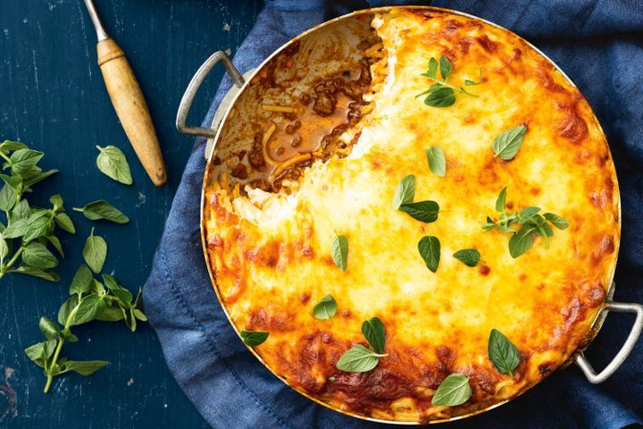

Back to Homepage
Lasagna Spaghetti Bolognese

aaghh... Pasta.. One of mankind's greatest creations. What better way is there to celebrate
this marvel other than preparing a lasagna dish, with a filling including Spaghetti Bolognese? To make things better, this hearty spaghetti bolognese lasagna is all made in one frying pan.
Perfect for those evenings coming home from a stressful day where doing piles of dishes is the last thing you had in mind. Right here is the list of ingredients you will be needing to prepare this tasty, yet simple recipe.
- 1 tbsp extra virgin olive oil
- 1 brown onion, chopped
- 1 medium carrot, chopped
- 3 mid bacon rashers, trimmed and chopped
- 2 garlic cloves, crushed
- 750g beef mince
- 1/3 cup red wine
- 1 large can of tomato sauce
- 1 tbsp fresh oregano leaves, chopped
- 250g Spaghetti
- 1/2 cup finely grated parmesan
- 1/2 cup thickened cream
- 500g smooth ricotta
- 1 & 1/3 cups grated mozzarella
- Fresh oregano leaves (to serve for presentation)
Now that we have all the ingredients to this dish, let's jump straight into the cooking.
- Heat oil in a 6cm-deep, 24cm round (top) ovenproof frying pan over medium-high heat. Add onion , carrot and bacon. Cook, stirring, for 5 minutes or until onion is softened. Add garlic.
Cook, stirring, for 1 minute or until fragrant. Add mince. Cook, breaking up with a wooden spoon, for 8 minutes or until browned.
- Add wine. Simmer for 2 minutes. Stir in passata and oregano. Season with salt and pepper. Reduce heat to low. Simmer for 15 minutes or until sauce thickens.
- Meanwhile, break spaghetti in half and cook following packet directions. Drain well. Transfer to a heatproof bowl. Add parmesan , cream and 3/4 of the ricotta . Season with salt and pepper. Toss well.
- Preheat oven to 200C/180C fan-forced. Transfer 1/2 the bolognese sauce to a heatproof bowl. Using the back of a spoon, press remaining sauce in frying pan to level. Arrange 1/2 the spaghetti mixture over sauce.
Spoon over remaining sauce, then top with remaining spaghetti mixture. Dollop remaining ricotta over the top. Spread gently to cover. Sprinkle with mozzarella .
- Bake for 25 minutes or until cheese is golden and melted. Stand for 5 minutes. Sprinkle with oregano. Serve.
If you liked this simple recipe, check out our other recipes here